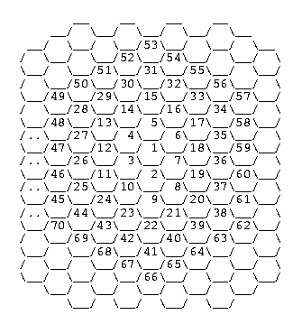

|
|
| 当前位置：电脑报电子版 > 1999 年 > 41 期 > 软件世界 > 9909请你编程 |
| 《 9909请你编程 》 |
| 大家好！《请你编程》又与你们见面了。《请你编程》得到了广大朋友的关心和支持，我在这里表示衷心的感谢。《请你编程》是一个读者朋友直接参与的栏目，是一个体现自我的园地，希望有编程愿望的朋友，无论是编程高手，还是初学者都能参与进来，我们将会认真对待每一份作品。下面请看本期天津读者杨玉琦的程序。
9909请你编程解题思路 解题的关键是搜索每组M＊N矩阵A中的子矩阵（团体），依次算出这些团体的总分sum，取所有这些子矩阵中团体总分最大者作为团体冠军。取最大的方法是将团体冠军总分maxsum赋以－32768的初值，每算出一个团体总分，都将它与maxsum比较，如果比maxsum大，则将该团体总分值赋予maxsum，否则，maxsum的值保持不变。矩阵A的只有1行的子矩阵有M＊N＋M＊(N－1)＋…＋M＊1个； 矩阵A的只有2行的子矩阵有(M－1)＊N＋(M－1)＊(N－1)＋…＋(M－1)＊1个； …… 矩阵A的只有M行的子矩阵有1＊N＋1＊(N－1)＋…＋1＊1个； 所以矩阵A的子矩阵（包括其自身）共有(1＋2＋…＋M)＊(1＋2＋…＋N)=(N＊(N＋1))＊(M＊(M＋1))／4个。 为了一个不漏地取遍矩阵A中的所有子矩阵，在程序中设置了(row1,col1)，(row2，col2)这两对游标，代表矩阵A的一个子矩阵的起止位置。row1和row2沿矩阵A的列方向向下滑动，col1和col2沿矩阵A的行方向向右滑动。滑动时必须保证游标值的有效性，即游标值所表征的子矩阵必须在矩阵A内。这四个游标值确定了一个取景器（取A中的子矩阵），任何一组有效的游标值，都确定了一个A的子矩阵（团体）。滑动游标的方法是先确定两个行游标row1、row2，然后再以此为基础向右滑动列游标col1，col2；取遍以row1，row2为起止行的子矩阵后，再向下滑动行游标，直到用这四个游标取遍矩阵A的所有子矩阵为止。向下和向右滑支游标的步长均为1。 解题步骤如下： 1. 初始化maxsum，maxsum= －32768； 2. 从输入文件beauty.txt文件中读入C（1= 3. 读入M和N并将输入文件中的矩阵灌入到矩阵A中； 4. 以步长为1滑动游标row1，row2，col1，co l2，依次找出矩阵A的只有1，2，…，N行的子矩阵，每确定一个子矩阵，都统计其团体总分。如果这个团体总分比maxsum大，则以该团体总分替代maxsum，并将游标值记录在x1（=row1），x2（=row2），y1（=col1），y2（=col2）中； 5. 输出矩阵A的团体冠军的位置x1，y1，x2，y2及团体冠军的团体总分maxsum； 6. 初始化maxsum，maxsum= －32768； 7. 重复步骤2至4，直到将C组数据都处理完毕。 源程序 ＃include<stdio.h>＃include<string.h> ＃define maxm 100 ／＊ m的最大值 ＊／ ＃define maxn 100 ／＊ n的最大值 ＊／ ＃define maxline 499 ／＊ 输入文件中每行可能的最大字符数 ＊／ main() {int c,m,n,a[maxm][maxn],sum,maxsum=－32767; ／＊ c,m,n的含义同题义;a为M＊N矩阵;sum记录团体总分;maxsum记录团体冠军的总分 ＊／ int row1,col1,row2,col2,x1,y1,x2,y2; ／＊ row1,col1,row2,col2为表征一个团体(子矩阵)的行,列游标;x1,y1,x2,y2的含义同题义 ＊／ int i,j,k,l,r,team; FILE ＊stream; char ＊string; stream=fopen(″beauty.txt″ ,″r＋O_TEXT″); fgets(string,maxline,stream); ／＊ 读入c ＊／ c=atoi(string); for(team=1;team<=c;team＋＋) ／＊ 逐组处理 ＊／ {fgets(string,maxline,stream); ／＊ 读入m,n ＊／ m=atoi(string); n=atoi(strchr(string,' ')); k=0; <m;j＋＋) ／＊ 读入M＊N矩阵a ＊／> for(j=0;jbr> {fgets(string,maxline,stream); <n;l＋＋)> for(l=0;lbr> if(k==0) {a[j][k]=atoi(string); k＋＋;} else {string=strchr(string,' '); for(r=1;r<=strlen(string);r＋＋) string[r－1]=string[r]; a[j][k]=atoi(string); k＋＋;} k=0;} <m;i＋＋) ／＊ 寻找该组中获得团体冠军的团体(子矩阵) ＊／> for(i=0;ibr> ／＊ 依次搜索矩阵a中的1＊1,1＊2,…,1＊n子矩阵的团体总分; 矩阵a中的2＊1,2＊2,…,2＊n子矩阵的团体总分; …… 矩阵a中的m＊1,m＊2,…,m＊n子矩阵的团体总分; 取团体总分为最大者作为团体冠军 ＊／ {row1=0; ／＊ 行游标赋初值 ＊／ row2=row1＋i; <m)＆＆(row2> while((row1m)) ／＊ 当行游标在有效范围内时 ＊／ <n;j＋＋)> {for(j=0;jbr> {col1=0; ／＊ 列游标赋初值 ＊／ col2=col1＋j; sum=0; ／＊ 初始化团体总分 ＊／ <n)＆＆(col2> while((col1n)) ／＊ 当列游标在有效范围内时 ＊／ {for(k=row1;k<=row2;k＋＋) for(l=col1;l<=col2;l＋＋) sum=sum＋a[k][l]; ／＊ 统计该团体总分 ＊／ if (sum>maxsum) ／＊ 若该团体的总分比先前记录的冠军团体总分 ＊／ {maxsum=sum; ／＊ 高,则以该团体总分替代冠军团体总分,并记录 ＊／ x1=row1; ／＊ 该团体(子矩阵)在矩阵a中的位置 ＊／ x2=row2; y1=col1; y2=col2;} sum=0; col1＋＋; ／＊ 滑动列游标 ＊／ col2＋＋;} col1=0; ／＊ 处理完a的row＊col子矩阵(其中row=1,2,...,m; ＊／ col2=col1＋i; ／＊ col=1,2,...,n)后,在处理(row＋1)＊col子矩阵前, ＊／ } ／＊ 重新初始化列游标 ＊／ row1＋＋; ／＊ 滑动行游标 ＊／ row2＋＋; }} printf(″\n％d ％d ％d ％d ％d″,x1＋1,y1＋1,x2＋1,y2＋1,maxsum); ／＊ 输出结果 ＊／ maxsum=－32768; }} 9911请你编程 随着国际互联网的迅速壮大，各种网络技术也得到了飞快的发展。Dr. Unknown 从蜂巢的结构上得到启发，发明了一种蜂窝式网络结构。这种结构是把整个网络想象成一个蜂窝，在这个“蜂窝”里，每一台电脑都是一个小的“蜂房”。每个“蜂房”可以和它周围六个“蜂房”直接通信，如果一个“蜂房”要和除了这六个“蜂房”以外的其它蜂房通信，必须要通过其它“蜂房”来实现。Dr. Unknown把一个“蜂房”编号为1，然后以它为中心，一圈 圈地按顺时针方向依次编号。如图：很明显：如果“蜂房”1要和“蜂房”2通信，直接联系即可，这样只要经过一个“蜂房”就可以了；而如果它要和“蜂房”20通信，可以按照路径1－2－8－20去联系，这样经过了三个“蜂房”（2、8、20）Dr. Unknown想知道任意两个“蜂房”之间通信最少要经过几个“蜂房”。现在，就请你编一个程序，帮他算一算。程序要求如下： 1.输入数据从文本文件network.txt中读取。输入数据文件格式为：第一行为一个整数N，表示有N组输入数据，N<=10。以下为N行，每行包括两个整数X、Y，表示编号为X和Y的“蜂房”之间要通信，X、Y<=1000。 2.输出到屏幕上，共N行。每行包括一个整数C，表示编号为X和Y的“蜂房”之间通信最少要经过C个“蜂房”。 输入数据范例： 3 1 2 1 20 5 17 输出数据范例： 1 3 2 本期题目由上海的oldbug提供。 来稿请寄磁盘稿或用E－mail投稿，请写明解题思路和源程序（包含详细的注解），将来稿寄到电脑报编辑部的收信地址或E－mail信箱，同时欢迎提供请你编程的题目。来稿截止日期：1999年12月15日。 本期获奖者名单 （广西 李智焕） （福建 梁远海 ） （辽宁 刘向东）（磐安 马拥军）（吉林 魏书楷） （甘肃 张巨英） （ 陕西 张凯） （安徽 温才学）（陕西 罗声栋） （浙江 刘健） 每位获奖者将获得苦丁香公司提供的光盘一张。 投稿电子邮箱：software@cpcw.com |
| 下载本期推荐软件 | 页 首 |
| 《电脑报》版权所有，电脑报网站编辑部设计制作发布 |